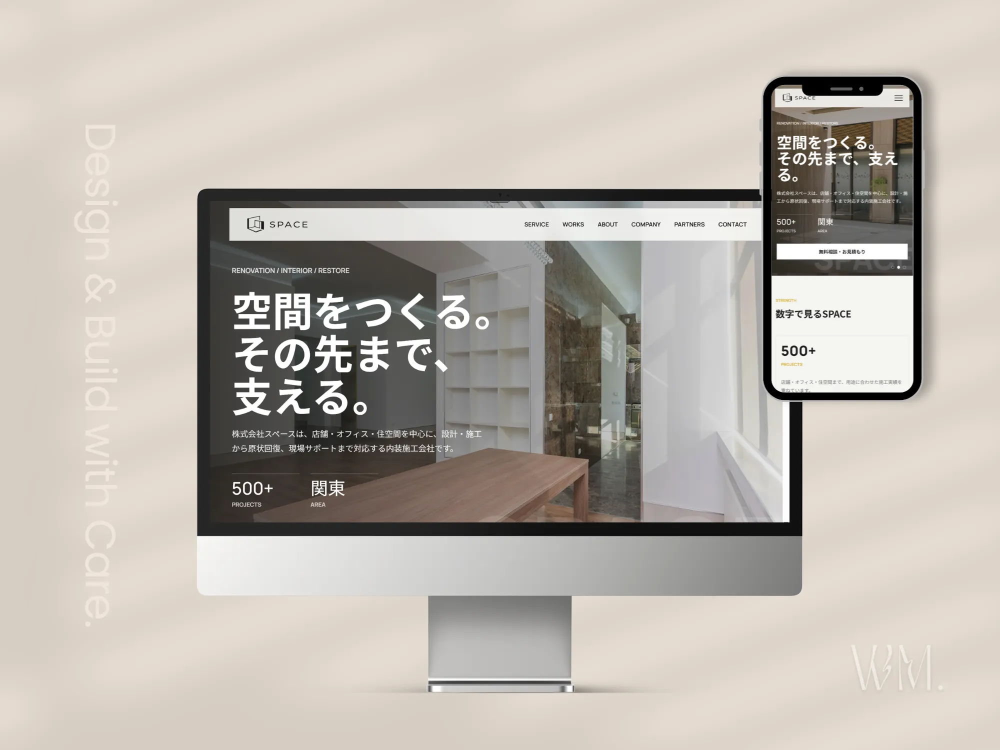
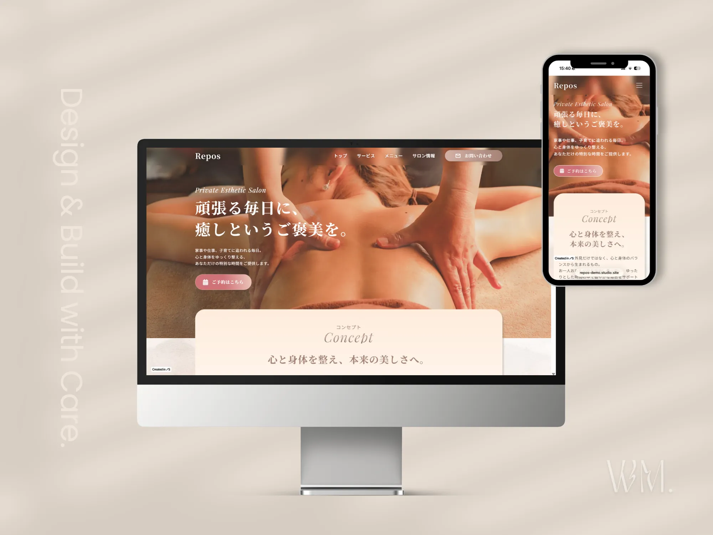
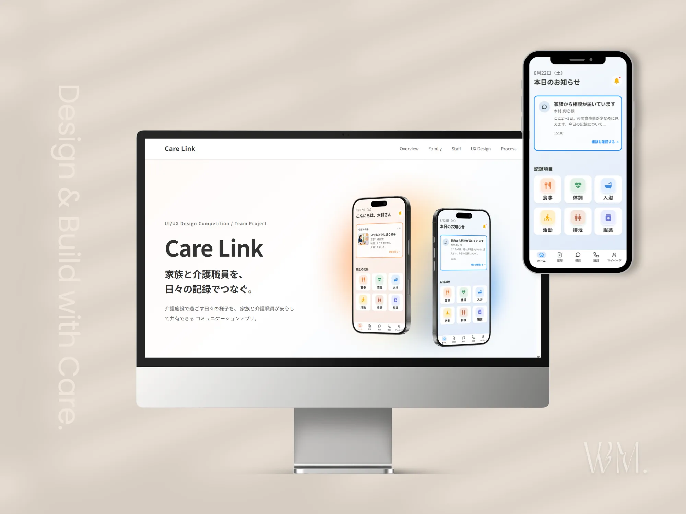
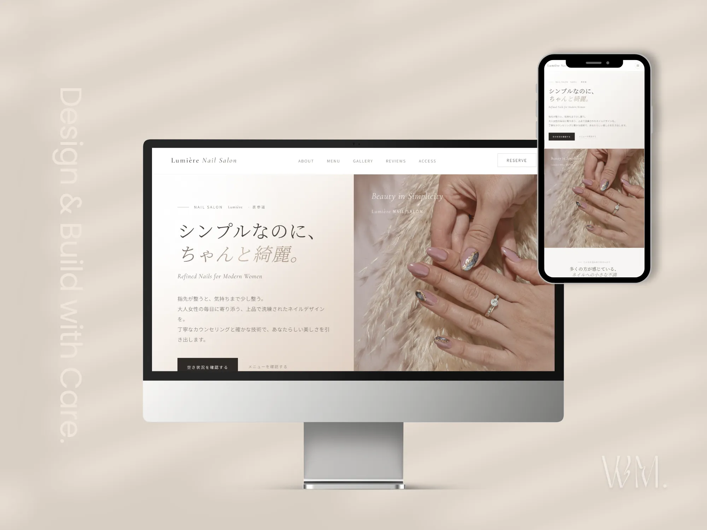
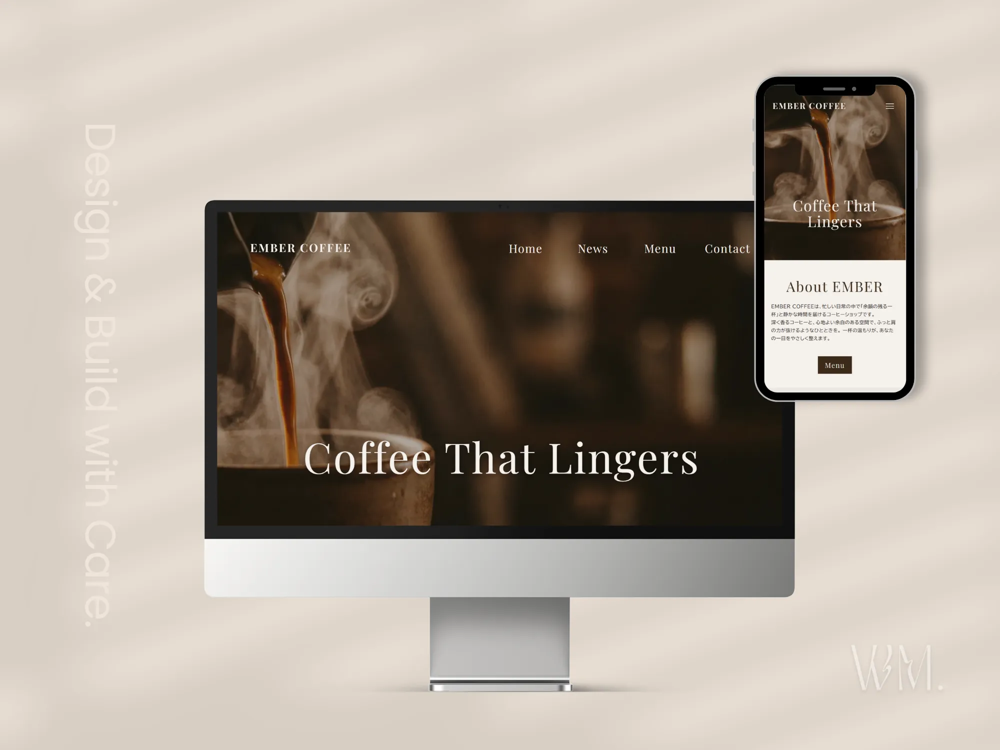
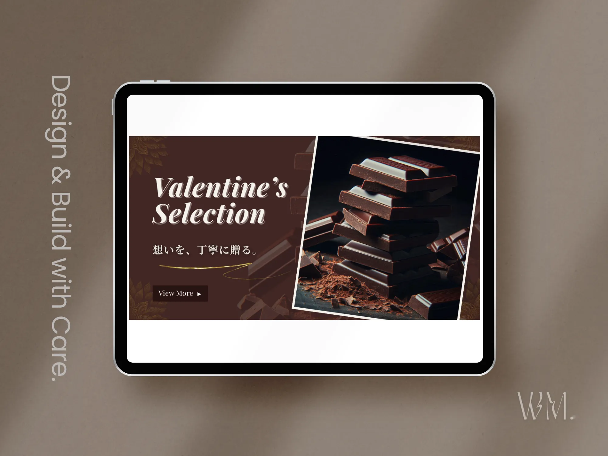
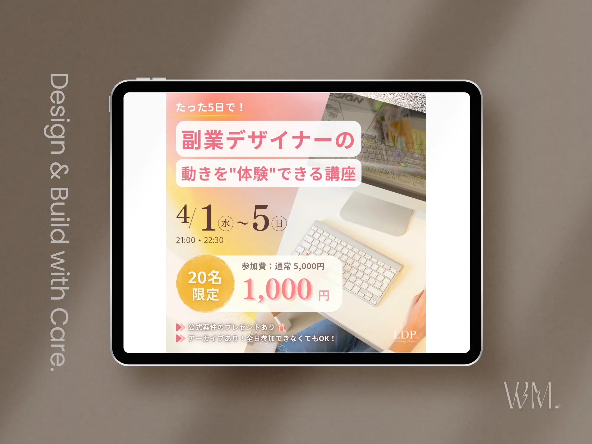
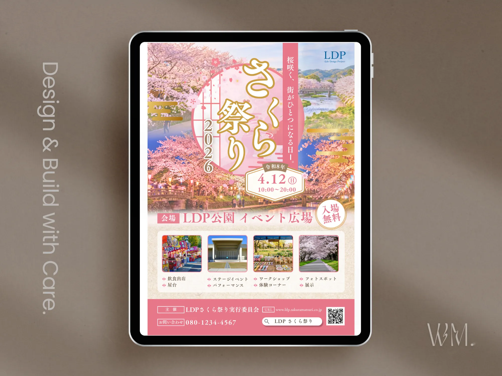
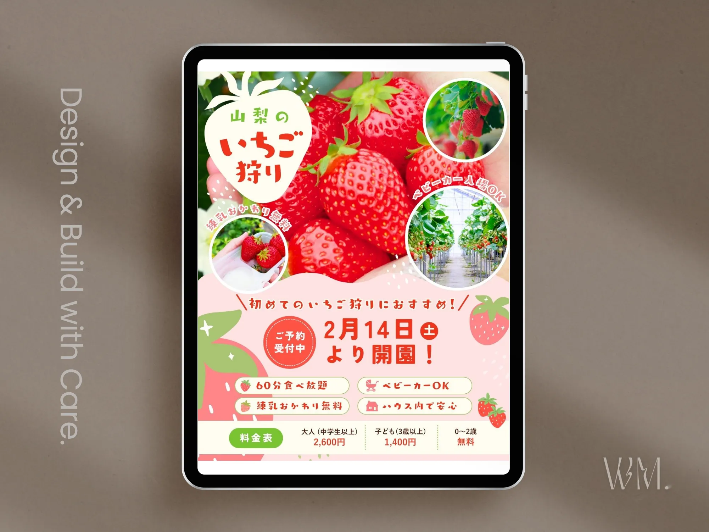

SPACE inc.
内装施工会社を想定し、情報設計からデザイン・実装まで再構築。信頼感と事業内容の伝わりやすさを意識したコーポレートサイトです。
Webデザインからコーディング、WordPress、STUDIOまで。 目的やターゲットを整理し、伝わりやすさと運用のしやすさを考えて制作しています。

内装施工会社を想定し、情報設計からデザイン・実装まで再構築。信頼感と事業内容の伝わりやすさを意識したコーポレートサイトです。

プライベートエステサロンを想定し、余白と写真を活かして設計。落ち着きと上質さ、予約への自然な導線を意識したサイトです。

家族と介護職員を日々の記録でつなぐコミュニケーションアプリ。チームでUI/UX設計からプロトタイプ制作まで行いました。

ネイルサロンを想定し、上品さと親しみやすさを両立。情報を整理し、予約まで迷わず進める構成を意識して制作しました。

コーヒーショップを想定し、写真とタイポグラフィを活かした世界観を設計。余白とレスポンシブ表現にも配慮して実装しました。

バレンタイン特集を想定したWebバナー。チョコレートの質感と落ち着いた配色を活かし、上品で印象に残るビジュアルを制作しました。

Webデザイン講座の集客を想定したSNS広告。開催情報と価格の優先順位を整理し、短時間でも内容が伝わる構成にしました。

春の地域イベントを想定したフライヤー。桜の華やかさを活かしながら、日時・会場・イベント内容を整理して設計しました。

ファミリー層向けのいちご狩り告知を想定。楽しさと親しみやすさを表現しながら、料金や特徴をひと目で把握できるよう整理しました。
WordPressの制作実績は、現在準備中です。
Webサイトは、公開することがゴールではありません。 ユーザーに情報が伝わること、事業の信頼につながること、 そして公開後も無理なく運用できることが大切だと考えています。
ターゲットやサイトの目的を確認し、 必要な情報と優先順位を整理します。
デザインの意図を読み取りながら、 レスポンシブ表示や操作性にも配慮して実装します。
制作方法や公開後の運用を考え、 更新しやすく管理しやすいサイト設計を目指します。
Start a Project
まだ内容がまとまっていない段階でも大丈夫です。 ご希望やお悩みを伺いながら、必要な制作内容を一緒に整理します。
お問い合わせ